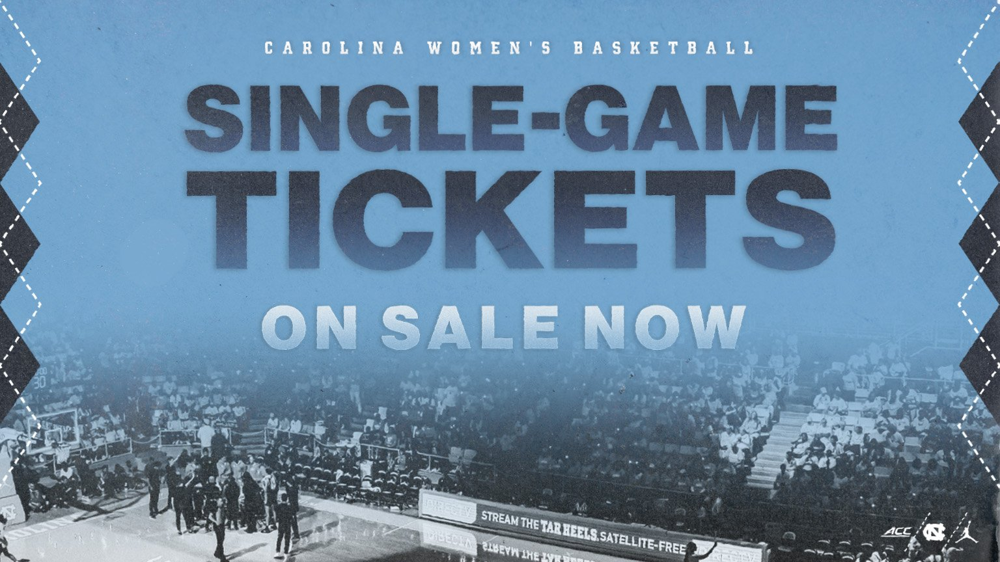

- Client: UNC Women’s Basketball
- I work in a fast-paced environment trying to capture the energy, tension, and precision of one of the most recognizable college basketball teams in the country.
- Wanted:
- Designer & Photographer
- Reach:
- 367k+ followers
